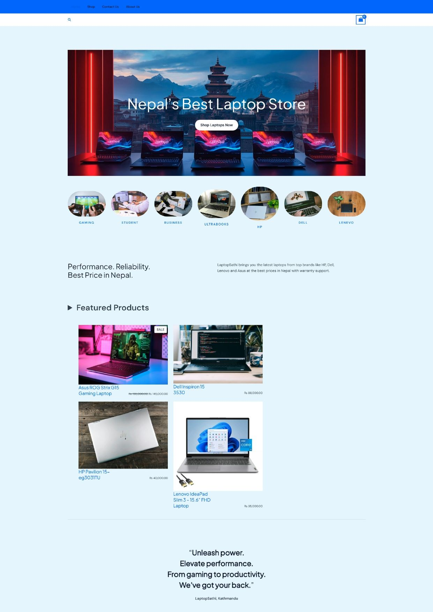
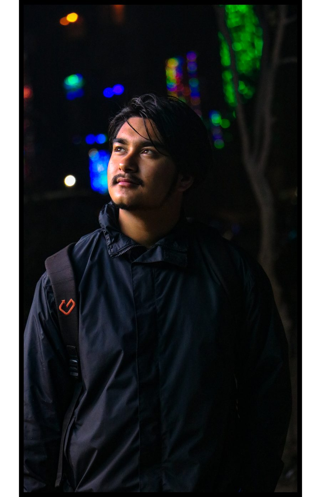
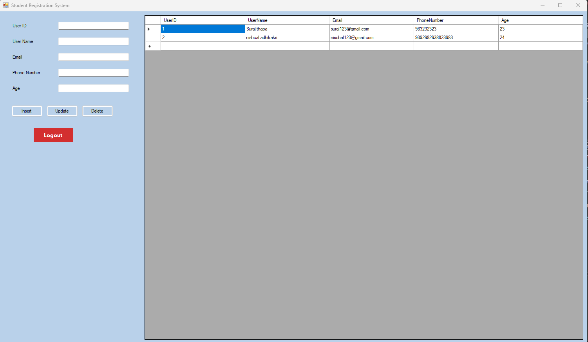
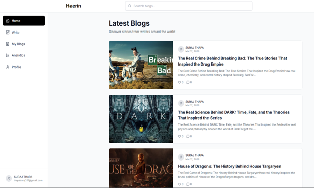

01
E-commerce
LaptopSathi
A WooCommerce-based laptop e-commerce website built with WordPress, using a custom-styled Astra theme and Nepal-focused e-commerce functionality.
Based in Nepal — Developer, Builder
I build websites,
software & digital
experiences.
A developer from Nepal who enjoys turning practical ideas and problems into functional software, websites, and digital experiences.

Learning by building. Building by solving. Improving with every project.
I'm interested in creating practical software, exploring new technologies, and turning ideas into something people can actually use.
A collection of projects, experiments, and practical software.

A WooCommerce-based laptop e-commerce website built with WordPress, using a custom-styled Astra theme and Nepal-focused e-commerce functionality.

A C# Windows Forms application connected to SQL Server for managing student records, with login authentication and full CRUD operations.

A full-stack blog platform, self-branded "Haerin" — write and publish posts, then track their performance from a personal analytics dashboard. Built as part of academic coursework.
My GitHub is where I experiment, build small projects, learn, and document my development journey.
An earlier version of my personal portfolio site.
covid-game PythonA small arcade-style Python game about surviving a virus outbreak.
Lifeblood_management_system PHPA web app for managing blood donors, recipients, and inventory.
Password_generator HTMLA configurable tool for generating strong, random passwords.
Nixie_Tube_Clock CSSA digital clock styled after vintage Nixie tube displays.
XMLlab2025 XSLTA set of XML lab exercises — DTDs, schemas, XPath, and XSLT.
I'm a developer from Nepal who enjoys building practical software and exploring how technology can solve everyday problems.
My work has taken me across web development, e-commerce, desktop applications, databases, and digital creativity.
I learn best by building — taking an idea, turning it into something functional, and improving it along the way.
Understand the problem before writing any code.
Turn ideas into working software, one piece at a time.
Improve structure, usability, and the details that matter.
Use every project to get a little better at the next one.
Technology isn't the only thing I enjoy creating with.
Ongoing undergraduate program in computer applications.
Higher secondary education.
Secondary education (SEE).
Have an opportunity, project, or idea? Let's talk.